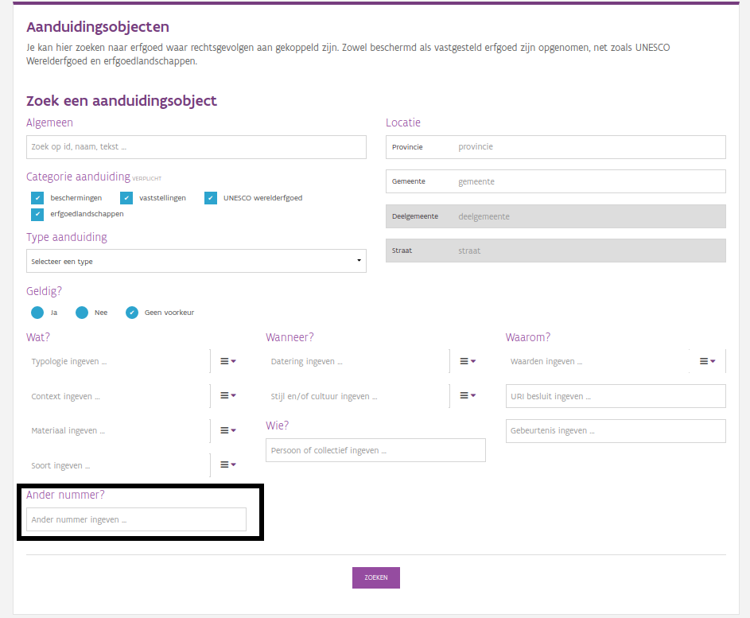

We staan er misschien niet altijd bij stil, maar ook webpagina’s verhuizen. Websites, databanken en andere informatiesystemen zijn geen statische gegevens. Ze worden gebouwd op een bepaald punt in de tijd, met bepaalde verwachtingen en in een bepaalde technologie. In een ideale wereld is een URL (dat ding dat in de adresbalk van je browser staat en aangeeft op welke pagina je bent) onveranderlijk. Cool URI’s don’t change, weet u wel. In de echte wereld blijft niets ooit helemaal hetzelfde. Cool URI’s don’t change, real ones do. Deal with it. (Voor deze blog mag u URI en URL als synoniemen beschouwen.)
Binnen het agentschap Onroerend Erfgoed, doen we al heel lang (sinds 2005 of zo) ons best om zo’n stabiel mogelijke URI’s te hebben. Wanneer we een URL toch moeten veranderen of zelfs opheffen, trachten we op de oude URL een doorverwijzing, ook gekend als een redirect, in te stellen naar een andere webpagina waar dezelfde of gelijkaardige informatie kan gevonden worden. Zo kan u nog steeds naar de inventaris onroerend erfgoed surfen op het adres https://inventaris.vioe.be, ook al is https://inventaris.onroerendererfgoed.be ondertussen al jaren de canonieke URL. En stuurt https://www.erfgoed.net/beschermingen u nog steeds naar het zoekformulier voor beschermd erfgoed, ook al bestaat de originele webpagina al een klein decennium niet meer.
Enig nadeel daarbij is wel dat veel mensen niet beseffen dat URL’s gewijzigd zijn. De oude URL’s blijven in gebruik op allerlei websites en verwijzen door naar nieuwe. Maar hoe langer dat duurt, hoe moeilijker het wordt. De logica van doorverwijzingen kan soms complex zijn, met oude URL’s die redirecten naar iets minder oude URL’s die op hun beurt ook weer redirecten naar hedendaagse URL’s. Eens de herinneringen aan die oude systemen vervagen, wordt het ook voor ons moeilijker om alles levende te houden. Kortom, het kost steeds meer. Daarnaast zouden bewaarders van oude URL’s na verloop van tijd hun oude URL’s moeten aangepast hebben. Een beetje zoals u elke Kerstperiode de adressen van uw familie en vrienden aanpast bij het sturen van de jaarlijkse kerstkaart. We merken echter dat er nog heel wat mensen oude verwijzingen naar webpagina’s bijhouden. Daarom dat we een duidelijk overzicht willen geven van een aantal vaak voorkomende oude links. Vandaag focussen we ons op het beschermde erfgoed. Later gaan we dieper in op de inventaris.
Lang geleden, nog voor het wereld wijde web echt een ding was, en URI’s nog niet bestonden of niet gekend waren, was er een eerste informatiesysteem voor beschermd erfgoed. Dat luisterde naar de naam Melanie, wat stond voor Monumenten En LANdschappen InformatiEsysteem. Dit systeem was eerst helemaal niet verbonden met het internet. Later kwam er een ontsluiting van een deel van de inhoud, de beschermde objecten zelf, in een online schaduwdatabank. Ondanks dat er toen nog geen sprake was van URI’s, werd er wel al een uniek nummer aan elk beschermd object toegekend. Die volgden een vast stramien: eerst kwam de O (voor object), daarna een letter voor elke provincie (W, O, A, L, B) en tenslotte 6 cijfers voor een nummer tussen 000000 en 999999. Deze identificator noemen we het Melanie Object Nummer. Zo krijg je dus nummers als OO003255 en OW000678. Als je naar de hedendaagse fiches van een aanduidingsobject kijkt, dan zie je dit soort nummers daar vaak opduiken. Naast de Melanie Object Nummers bestonden er ook Melanie Dossier Nummers. Die hadden een gelijkaardige structuur, maar begonnen met een D in plaats van een O. Zo krijg je dus een nummer als DA002388. Het verschil zat hem in het feit dat meerdere objecten samen in één dossier konden beschermd worden, DA002378 ging bijvoorbeeld over 4 beschermde monumenten van 1 architect.
Toen Monumenten en Landschappen samen ging met Ruimtelijke Ordening, in het agentschap Ruimte en Erfgoed, werd er ook gewerkt aan een samenvoeging van de informatiesystemen. Melanie werd bedankt voor bewezen diensten, maar haar erfenis leeft verder. Haar taken werden overgenomen door Bredero, het dossieropvolgingssysteem dat al sinds jaar en dag werd gebruikt voor Ruimtelijke Ordening. Ook in dit systeem kwamen de concepten van een object en een dossier voor. Een Bredero Nummer bestaat uit drie delen, gescheiden door forward slashes (/). Het eerste deel geeft aan om welk soort document het gaat, zoals een beschermd monument, stadsgezicht of een beschermingsdossier. Het tweede stuk is een 5-cijferige NIS code die aangeeft in welke gemeente of provincie een bepaald nummer zit. Het laatste stuk is een volgnummer om alles uniek te maken. Een volledig nummer ziet er uit als 4.01/43005/162.1 (een beschermd monument), 4.03/40000/107.1 (een beschermd landschap) of 4.001/30000/2517.1 (een beschermingsdossier).
Bij het ontstaan van het agentschap Onroerend Erfgoed in 2011 werd a snel duidelijk dat Bredero verdiensten had voor dossieropvolging, maar eigenlijk niet geschikt was al een stabiele omgeving voor doorgedreven object gerelateerde informatie over erfgoed. De bestaande Inventaris Onroerend Erfgoed bood op dat vlak veel meer mogelijkheden. Uit die synergie ontstonden de aanduidingsobjecten (Erfgoedobjecten en aanduidingsobjecten). Bij het opbouwen van die dataset werden maximaal de oude identificatoren die gekend waren overgenomen. Daarom kan je vandaag de dag op de pagina van een aanduidingsobject onder de noemer Beschermingsdossiers een lijst met oudere nummers en vermeldingen raadplegen. De inventaris leefde als systeem wel al altijd op het www en werkte altijd al met URI’s. Sinds het ontstaan van de aanduidingsobjecten, werken we dan ook met URI’s volgens de URI richtlijnen van de Vlaamse Overheid. Zo kan je de parochiekerk Sint-Petrus en Sint-Paulus te Hansbeke terugvinden onder het oude Melanie nummer OO001175, het equivalente Bredero nummer 4.01/44049/119.1 en de nieuwe URI https://id.erfgoed.net/aanduidingsobjecten/10535.
Zoeken naar Melanie of Bredero nummers op https://inventaris.onroerenderfgoed.be/aanduidingsobjecten/zoeken
Het project beschermingsdatabank omvatte onder andere het overzetten van beschermde objecten uit Bredero naar de aanduidingsobjecten. Dit ging gepaard met een grote aandacht voor data-kwaliteit, een herevaluatie van oude gegevens en het toevoegen van nieuwe en verbeterde informatie zoals locatie-gegevens en thesaurustermen. Soms was het noodzakelijk om een oud Melanie of Bredero nummer op te splitsen in verschillende delen, het kan dan ook voorkomen dat een oud nummer vandaag de dag door meerdere fiches voorgesteld wordt. Dit is echter eerder uitzondering dan regel. Om het voor jullie makkelijk te maken kan je simpelweg zoeken op een oud nummer en zien met welk aanduidingsobject dat overeen komt. Daarvoor ga je naar het zoekformulier van de aanduidingsobjecten en tik je onderaan bij Ander nummer? het Melanie of Bredero nummer in.
Heb je nog ergens oude URL’s in gebruik, dan zal daar steeds een Melanie of Bredero nummer in voorkomen. Heb je URl’s die dateren van de periode 2012-2016, dan zien ze er waarschijnlijk als volgt uit: https://beschermingen.onroerenderfgoed.be/object/id/OO001175 of https://beschermingen.onroerenderfgoed.be/object/id/4.01/44049/119.1. Na 2016 werden deze doorgestuurd naar een pagina op de inventaris met een URL zoals https://inventaris.onroerenderfgoed.be/erfgoed/beschermd/OO001175. Op die pagina werden alle gekoppelde aanduidingsobjecten getoond, tenzij er maar 1 object was. Dan werd de gebruiker doorgestuurd naar dat object. Vandaag de dag sturen we dit verkeer naar https://inventaris.onroerenderfgoed.be/aanduidingsobjecten?ander_nummer=OO001175 of https://inventaris.onroerenderfgoed.be/aanduidingsobjecten?ander_nummer=4.01/44049/119.1 waar je alle aanduidingsobjecten ziet die overeenkomen met dat oud nummer.
Mogelijk heb je nog oudere URL’s die er uitzien als http://paola.erfgoed.net/engine/fiche.php?id=000816&pv=O. Deze werken niet meer, maar ook hier kan je makkelijk het Melanie nummer reconstrueren. Neem de waarde van de parameter id, zet daar de waarde van de parameter pv voor en tenstlotte nog een O, dan krijg je OO000816 en die kan je dan weer opzoeken in de nieuwe inventaris onder ander nummer. Zo kom je uiteindelijk bij Motte de Hoge Wal in Ertvelde uit.
In elk geval, als je oude links hebt raden we sterk aan om deze om te zetten naar onze nieuwe URI’s. Merk op dat we een onderscheid maken tussen de document URI en de concept URI. De document URI, bv. https://inventaris.onroerenderfgoed.be/aanduidingsobjecten/10965 stelt het document voor dat je kan lezen over de Hoge Wal. De concept URI, https://id.erfgoed.net/aanduidingsobjecten/10965 stelt het concept van de Hoge Wal als tastbaar object voor. We garanderen enkel persistentie op die laatste URI. De document URI is bv. gebonden aan de domeinnaam onroerenderfgoed.be, die gebonden is aan onze organisatienaam. Stel dat deze wijzigt, zal het domein waarop we onze inventaris hosten misschien ook meewijzigen. De concept URI’s op erfgoed.net hebben hier echter geen last van aangezien deze niet gekoppeld zijn aan onze organisatienaam.
Als je over veel links naar onze site beschikt, dan is het best wel wat werk om die één voor één op te zoeken. Daarom bieden we jullie een kort Python script aan waarmee je in één keer van heel veel oude Melanie of Bredero nummers de URI’s kunt te weten komen. Bewaar het script als map_bescherming_aanduiding.py, voorzie een .csv bestand met een lijst van oude identificatoren en laat het script lopen.
# -*- coding: utf-8 -*-
"""
Dit script aanvaardt een csv bestand met naamgeving oude_beschermingsnummers.csv en genereert een nieuw CSV bestand
met een mapping van de oude beschermingsnummers en hun nieuwe URI
Stel dat het oude beschermingsnummer beschikbaar was via
https://inventaris.onroerenderfgoed.be/erfgoed/beschermd/OW000521, dan zal het script een zoekopdracht starten op dit
nummer via https://inventaris.onroerenderfgoed.be/aanduidingsobjecten?ander_nummer=OW000521.
De resultaten van die zoekopdracht zijn de URI's van de beschermingen gekoppeld aan het oud beschermingsnummer.
Gebruik: python map_bescherming_aanduiding.py
Het input CSV bestand dient in dezelfde map te staan als het python script
Een output CSV wordt aangemaakt, eveneens in dezelfde map als het script
Het input bestand oude_beschermingsnummers.csv is een lijst met 1 beschermingsnummer per regel. Bijvoorbeeld:
OW000521
OW000522
OW000523
OW000524
OW000525
Output bestand krijgt de naamgeving mapping_beschermingsnummer_aanduidingsuri.csv.
Dit is een ; gescheiden CSV met per rij:
- Het oude beschermingsnummer
- een met komma gescheiden opsomming van URI's die gekoppeld zijn aan het oude beschermingsnummer.
Voorbeeld:
OW000525;https://id.erfgoed.net/aanduidingsobjecten/11982
OW000524;https://id.erfgoed.net/aanduidingsobjecten/12062
OW000521;https://id.erfgoed.net/aanduidingsobjecten/11965
OW000523;https://id.erfgoed.net/aanduidingsobjecten/12217,https://id.erfgoed.net/aanduidingsobjecten/1
OW000522;https://id.erfgoed.net/aanduidingsobjecten/11961,https://id.erfgoed.net/aanduidingsobjecten/2
"""
import requests
import csv
from requests.exceptions import HTTPError
mapping = dict()
oude_beschermingsnummers = list()
url_template = 'https://inventaris.onroerenderfgoed.be/aanduidingsobjecten?ander_nummer={oud_beschermingsnummer}'
bronbestand = 'oude_beschermingsnummers.csv'
headers = {'accept': 'application/json'}
with open(bronbestand, 'rb') as csv_bestand:
reader = csv.reader(csv_bestand)
for row in reader:
oude_beschermingsnummers.append(row[0])
for oud_id in oude_beschermingsnummers:
mapping[oud_id] = list()
url = url_template.format(oud_beschermingsnummer=oud_id)
try:
r = requests.get(url, headers=headers)
r.raise_for_status()
for item in r.json():
mapping[oud_id].append(item['uri'])
except HTTPError as http_err:
mapping[oud_id].append('HTTP fout bij het ophalen van het beschermingsnummer: {msg}'.format(msg=http_err))
except Exception as err:
mapping[oud_id].append('Onverwachte fout bij het ophalen van het beschermingsnummer: {msg}'.format(msg=err))
with open('mapping_beschermingsnummer_aanduidingsuri.csv', 'w') as csv_file:
writer = csv.writer(csv_file, delimiter=';')
for key, value in mapping.items():
row = [key] + [','.join(value)]
writer.writerow(row)